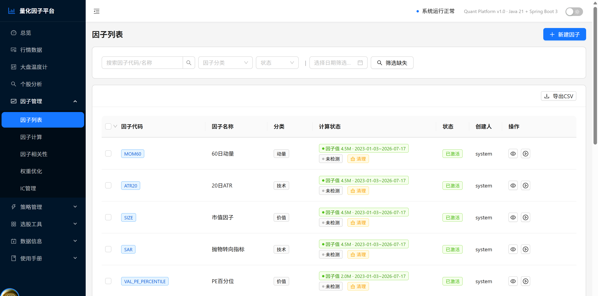
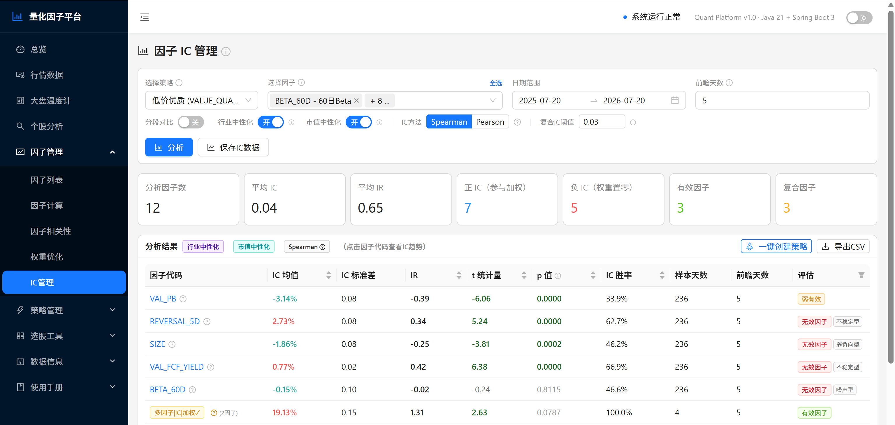
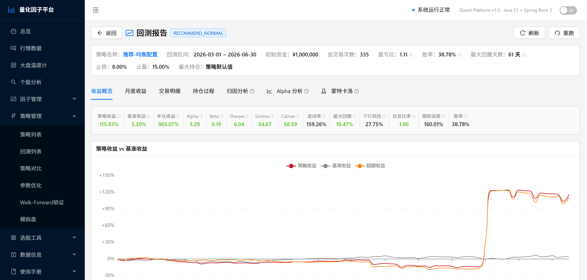
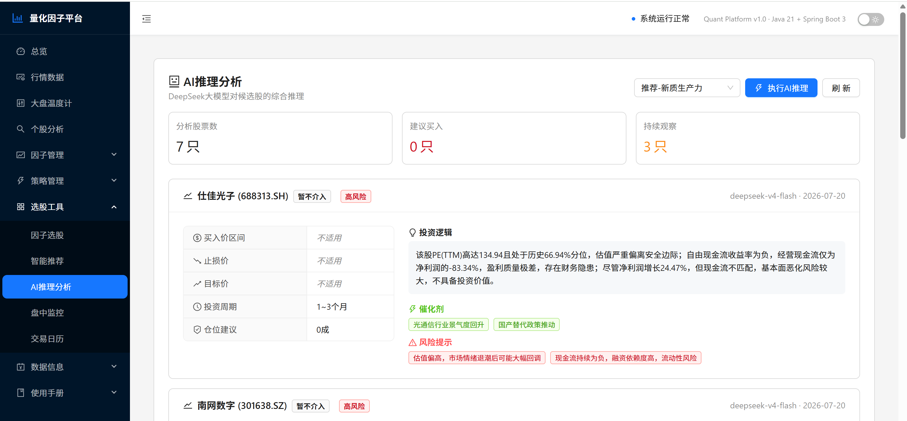
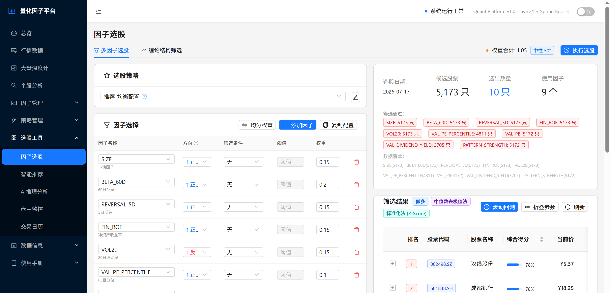

不是只能回测的工具箱，而是从原始行情到每日推荐产出的端到端系统。
动量、价值、质量、情绪、资金、形态六大类因子，支持 IC 分析、衰减检测与相关性去冗余。
多因子选股、动量、均值回归、形态识别与自定义脚本，置信度 P0-P3 冷启动保护。
事件驱动模拟，Brinson 归因 + Fama-French 三因子 + 蒙特卡洛 VaR/CVaR，Walk-Forward 防过拟合。
DeepSeek 大模型驱动，个股因子画像、财务诊断、风险预警与同行业横向对比一键生成。
P1-P6 六阶管线自动产出每日推荐，IC 加权融合上限 35%，有害因子自动反向。
跨策略个股去重、SW2 行业集中度硬上限、回撤监控与 Regime 市场状态自适应。
信号生成 → 执行 → 风控 → 预警完整闭环，盘中实时监控，SSE 实时价格推送。
五源采集（Baostock / 腾讯 / AKShare / 东方财富 / 同花顺），ClickHouse 列存加速，前复权自动刷新。
每一阶都是一道过滤器，噪声因子与拥挤风险在进入组合前就被拦下。
剔除噪声因子
|IC| < 0.015
预测能力持续性评估
因子拥挤风险预警
财报季因子表现调整
多周期信号一致性验证
IC 加权，上限 35%
反转有害因子
React 18 前端 + Spring Boot 3 后端 + MySQL / ClickHouse 双数据源，Python 脚本负责采集。
因子、策略、数据源、归因四类能力都有明确的扩展契约：写一段脚本或加一条配置即可接入，不必改动主干代码。
内置 Java 因子之外，脚本因子、组合因子、形态因子都能在系统里直接新增，页面上配完即可参与计算。
BUILTIN 内置 · SCRIPTED 脚本 · COMPOSITE 组合 · PATTERN 形态factor_definition.script_code，组合因子用 factor_config_json 复用既有因子ScriptedFactorEngine 执行，由 FactorComputeEngine 统一分发策略不是写死的参数组合，而是一段可读、可调、可直接回测的脚本，在线编辑后立刻验证。
Map<String,Number>，股票代码 → 目标权重bars · symbols · factorValues · indexBars · industryMapBacktestScoring 注入绑定变量后调用，60 秒沙箱超时strategy_definition.script_code// symbols: 候选股票列表 factorValues: 因子值
return symbols.findAll { factorValues.get(it)?.get("VAL_PB") < 2 }
.collectEntries { [(it): 1.0d / symbols.size()] }采集脚本与调度规则分离，接一个新数据源只需加脚本 + 配一条 cron，主链路零改动。
update_*.py 命名统一，数据源抽在 data_provider/ 抽象层data_schedule_config 支持自定义 cron_expression，category=CUSTOMdata_task_dependency 声明上下游与延迟秒数，支持多上游门控ScheduleService 自动装载 cron，页面可启停与手动执行归因实现是独立 Service，API 层开箱可用；推荐结果可被外部系统按 token 直接消费。
BrinsonAttributionService · FactorStyleAttributionService（含 FF3）compute* 方法 + 一个 Controller 端点/api/swagger-ui.html，/api/v3/api-docs/ws 与 /ws-native，回测进度实时推送GET /recommendations/latest 拉取每日推荐结果完整的操作步骤与字段说明，请查阅使用手册。





| 用户群体 | 核心痛点 | 平台价值 |
|---|---|---|
| 个人量化投资者 | 因子库匮乏、回测工具单一、无法系统评估策略 | 开箱即用的 35+ 因子与企业级回测引擎，降低量化门槛 |
| 量化研究团队 | 因子管理混乱、策略迭代慢、缺乏健康监控体系 | 因子全生命周期管理 + 衰减自动检测，研究效率倍增 |
| 金融科技公司 | 从零搭建成本高、数据管道维护难 | 完整数据工程链路 + 可扩展因子引擎，缩短产品化周期 |
| 量化学习者 | 理论与实践脱节，缺乏可运行的真实系统 | 完整开源代码 + 策略文档，从阅读到实操无缝衔接 |
导入 stock-service/sql/stock.sql（MySQL）与 ch.sql（ClickHouse），应用启动不执行 DDL。
JDK 21 + Maven 3.8 打包后运行 stock-service，接口前缀 /api，端口 8080。
Node 18+，npm install && npm start，访问 http://localhost:3000。
在「数据更新」页采集行情，再执行因子计算与推荐任务，即可看到每日选股结果。
# 1. 后端
mvn clean package -DskipTests
java -jar stock-service/target/stock-service-1.0.0.jar
# 2. 前端
cd frontend && npm install && npm start
# 3. 数据库（仅结构，不含数据）
mysql -u root -p stock < stock-service/sql/stock.sql